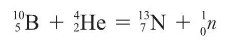
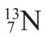
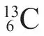
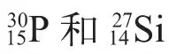
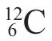
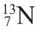

英文
英文约里奥，居里
编者按
科学家们仍旧在探寻粒子（比如α粒子）轰击稳定元素所导致的核嬗变的种类。这篇文章中伊雷娜·居里和弗雷德里克·约里奥报道了有关通过α粒子照射铝、硼和镁分别产生了氮、硅和磷的新的不稳定同位素的信息。从它们在数分钟内放出正电子的衰变来看，新“放射性元素”的存在是证据确凿的。特别的是，这两位法国科学家使用化学方法分离出了这些新的同位素，从而鉴定了它们的化学性质。短寿命的放射正电子的同位素，包括本文中所报道的氮–13，现在被用在正电子发射层析的医学成像技术中。（注意文中第三段似乎将“硼”错写成了“铍”。） 英文
几个月之前，我们发现某些轻元素在α粒子的作用下会放出正电子[1]。我们最近的实验得到了一个令人十分惊喜的结果：以钋样品所产生的辐射照射铝箔，当移开放射性的钋样品时，正电子的发射不会立即停止。铝箔仍然保持着放射性，辐射就像普通的放射性元素一样以指数形式衰减。对于硼和镁，我们也观察到了同样的现象[2]。放射性活度的半衰期分别是：硼14分钟、镁2分30秒、铝3分15秒。 英文
我们在氢、锂、铍、碳、氮、氧、氟、钠、硅和磷等元素中都没有观测到类似的效应。也许在某些情况下由于这一效应寿命过短，所以通过简易的观测无法观测到。 英文
在α粒子作用下，铍、镁和铝元素嬗变产生了新的发射正电子的放射性元素。这些放射性元素可以视为是处于特定的激发态上的一个已知的核，不过它们是未知同位素的可能性更大，而通常这些同位素都是不稳定的。 英文
例如，我们认为硼发生了下面的核反应：

其中

是一个放射性核，蜕变时放出正电子，最终得到一个稳定的核
。对于铝和镁来说，所得到的放射性核分别是
。 英文
铝放出的正电子似乎构成一个类似于β射线谱的连续谱，其最大能量约为3×106eV。就β射线的连续谱来说，为了在嬗变中满足能量守恒与自旋守恒的原则，允许同时放出一个中微子（或者一个路易斯·德布罗意的反中微子）似乎是必要的。 英文
至于其他的嬗变情况，产生新放射性元素的嬗变正比于α粒子数的10–7或10–6。使用放射性强度达100毫居的钋样品，我们也只能得到大约100,000个放射性元素的原子。不过，使用计数器或者电离室来探测它们的辐射，就可以确定它们的化学性质。当然，前提是它们在放射性活度消失之前的几分钟内完成化学反应。 英文
我们已经照射了化合物氮化硼（BN）。使用苛性钠溶液来加热氮化硼，可以产生气态的氨。实验结果表明，放射活性与硼元素分离并转移到氨中了。这个结果与此种情况中放射性核是氮的一个同位素这一假设吻合得很好。 英文
将被照射的铝溶解于盐酸中，放射活性会被氢转移到气态，且可以被收集在试管中。该化学反应必定形成了磷化氢（PH3）或者四氢化硅（SiH4）。而在酸性溶液中，放射活性与磷酸锆一起沉淀下来，这似乎意味着放射性元素是磷的一个同位素。 英文
这些实验给出了人工嬗变的第一个化学证据，同时也给出了在上述的反应中α粒子被俘获的证据[3]。 英文
我们提议将以硼、镁和铝嬗变形成的新的放射性元素命名为放射性氮、放射性硅和放射性磷。 英文
在使用其他轰击粒子，如质子、氘、中子引起的一些核反应中，也有可能生成这些元素或者类似的其他元素。例如，

俘获一个氘后，释放出一个中子，就有可能会形成
。 英文
（王耀杨 翻译；张焕乔 审稿）